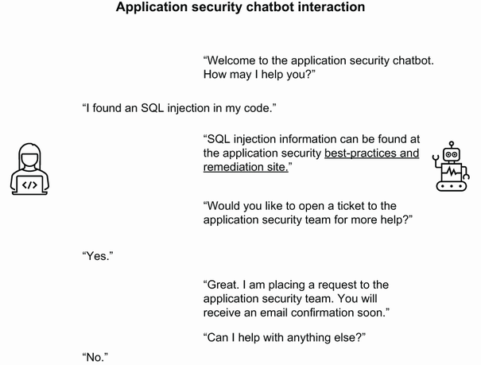

5 Security belongs to ever yone
6 Application security as a service
10h 2m remaining
6 Application security as a service
Changing the application security model from gated activities to enablement
Creating an environment of application security as a service
Learning the services that should be part of the application security as a service ecosystem
Closing the divide between security and engineering
What is a great way to stop getting invited to the engineering holiday party? Block an application release or hold up a build due to a found vulnerability. Historically, application security has been the team that comes in at the end of a productive coding release to show various issues with the code, deployment, libraries used, and other ways of showing how the software is not ready for prime time. This gated approach is something that has been pushed for by security for various reasons. The prime one being that the security organization is tasked with identifying, helping to reduce, and measuring the risk of the organization. In this capacity, the security team obviously wants to ensure that there are no vulnerabilities that put the organization at risk going out to production. A better approach is to create an ecosystem of security that enables the development teams to access security services along the path to production.
However, many organizations look at the security gates as a level of development to strive for despite the difficulties. The clear concern is that this approach will require changes to the application in order to apply stronger security that could delay the release of the application. So, what many organizations end up doing is having a release valve that allows them to still push their code to production and assume some level of risk due to the open security issues. This risk is often owned by the business owner of the impacted application or by a senior leader in engineering. Although this works to ensure that value is still being delivered to the customers, this also means that risk is being created for the organization.
Although every organization needs to find a balance between releasing features and minimizing risk, many opt to release features and accept the risk—often without understanding the real impact and without real consequences to the acceptance. To be honest, very few organizations actually hold the risk accepter accountable for a risk that materializes into a breach. In other words, not many organizations will withhold compensation or levy other penalties like termination in the case of a breach that was perpetrated by an accepted risk. It is important for the security organization to properly identify the risk, put it into the context of the application and business, and ensure that if it is accepted that the risk owner knows what they are accepting.
In earlier chapters, risk was defined as the potential for loss of an asset or damage to an asset. This comes in every shape and size, from intentional or unintentional actions, natural disasters, human error, and system failure. While these risks can occur at any time with little or no warning, it doesn’t mean that the organization has no ability to address them.
Although risk is a broad topic on its own, in the context of software development there is still risk that can be addressed by the organization and the engineering team. There are four generally accepted ways of managing risk:
Avoid—This is where the organization attempts to remediate or find an alternative solution that removes the risk. This is often costly compared to the other options, as it means additional work or a change in technology.
Accept—Here the organization understands that the risk is low or the effort to remove the risk is higher than what the actual risk is. This will lead them to take the risk on with the anticipation that at some point the risk will be removed. An example is when the organization has a product that is being sunset in the future. Until that time, any noncritical risk may be accepted.
Mitigate—When an organization mitigates a risk, they are looking to implement some service or control that will essentially reduce the risk of occurrence or severity of the risk. For example, an organization that has a critical vulnerability due to a third-party component that they chose to use and that does not have the ability to upgrade to the latest version may look to a web application firewall (WAF) or run-time application security protection (RASP) to provide run-time protection until the component can be upgraded.
Transfer—Transferring risk is typically thought of as purchasing cybersecurity insurance where the organization will pay to have some other entity own the risk. An example of this is when an organization purchases disaster insurance on property that houses their infrastructure or employees.
Which one the organization chooses largely depends on their risk appetite. In some cases, the organization may be forced into one path over the other. As I mentioned, if a critical risk is discovered and there is no clear path to resolution, the organization may be forced to accept the risk and accelerate the decommissioning of the technology that poses the risk to begin with. In this case, the organization will accept the risk and accelerate the migration to the newer technology so that the risk can be ultimately remediated through avoidance. Another example would be if the organization builds its critical infrastructure that supports their software in a flood-prone area. In this case they may be forced to purchase flood insurance, thereby transferring the risk to the insurance company.
In previous chapters, you learned how risk can be identified. Just as a reminder, risk is determined in the OWASP Risk Rating as the likelihood combined with the impact. This means that if a risk such as unauthorized access to sensitive information through the exposure of administrator credentials is identified, then the organization needs to review how likely the issue is to occur and what happens if an attacker gains access to the sensitive data. In this case the likelihood might be low, but the impact could be high.
How does this risk identification impact the development team? As mentioned, the organization has several options to address risk at the high level, but actually prioritizing and addressing the risk in a development team is different. Not all risks are created equal, and even the same risk will impact different teams in the organization differently. For example, if the organization has chosen to mitigate a discovered risk, then the development team will be an integral part of that effort by integrating the mitigation controls like a RASP. The development team will need to work with the application security team to get the organization’s RASP product packaged with their code, deployed with the application to production, and provide maintenance and reporting.
One of the most critical parts of understanding the risk to the organization is knowing the actual risk level of a given application. For example, the organization may have several applications that they develop internally. Each of them will have a different risk impact to the organization based on the data they collect, the audience it’s exposed to, and the financial impact to the organization. Although it is difficult to put together an actual calculation that defines what the risk is to an organization, there are several steps that can be taken to identify what risk an application poses to the organization.
In chapter 2, I covered the OWASP risk rating methodology, which is a simple calculation that takes the likelihood of attack and the impact in order to calculate the overall risk. This becomes an issue because determining the likelihood of an attack is difficult since much of this depends on the opportunity and the lack of controls in place. But some organizations may have critical applications with known vulnerabilities that are never attacked. It’s not that the possibility is not there; it’s that the opportunity or the exposure is not. Another way to view the risk of an application to the organization is to instead look at it from the application standpoint instead of the vulnerability. You can approach this by first categorizing the applications by their level of importance in the organization (table 6.1).
Table 6.1 Application importance in an organization
Once the application importance has been identified, the organization can then begin to determine what the cost of a potential breach of data or disruption of the application would be. This, of course, varies by application, organization, and the breach itself. However, the organization can put the breach into perspective of other historical and contemporary breaches in their industry. One great example of leveraging contemporary data is the Verizon “Data Breach Investigation Report” (DBIR). This annual report provides insight into the breaches that have been reported during the year. The report quantifies the overall loss beyond the direct impact; for example, payment to a ransomware group that goes above the business disruption costs. It also identifies several factors:
Direct loss as a result of the attack
Cost of digital forensics and incident response
Because it is difficult to put a number on an actual breach without the details, the Verizon DBIR helps with getting a range that can be used to understand what a potential breach of data would mean for an organization. There are two things to consider per Verizon’s DBIR:
Organizations that go through a data breach underperform the NASDAQ by 5% in the 6 months following a breach.
Some incidents have little to no financial impact, where the majority can run between $1,000 and $600,000 per incident.
That is a wide swing in cost, but it at least gives an organization some numbers to think about when considering the cost of a possible breach. One of the most common types of attacks that cost the organization is ransomware. These have a clear financial impact where the organization not only has to pay the ransom, but also the downtime while restoring data from backups or negotiating with the attacker. According to Sophos’s 2021 “State of Ransomware” report, the average payment was $170,000 in 2020 with the highest payment being $3.2 million.
What often happens with both the ransomware and data breach costs is that the attackers will charge what the organization is likely to accept. In these cases, if the attacker overcharges, the organization is likely to rebuff the attempt and find an alternative path to resolution. This means for smaller organizations, a smaller amount would be requested. For larger organizations, the attackers may attempt a larger payday.
How does this factor into the organization’s overall risk associated with the applications they have? Consider that for your average application, it can be assumed that there will be several vulnerabilities per every so many lines of code. These can be identified through the scanning tools that I have covered throughout this book while others can go undetected through the lack of tooling or the inability of the tools to find issues.
Now that we know that there are vulnerabilities in our code, and the cost of a security incident can run a wide range of costs, the organization can begin to put together what their overall exposure to a security issue is and the potential cost. But this doesn’t mean that the organization has no recourse against these issues. In chapter 3, I covered some of the protection tools that can be used to mitigate vulnerabilities. These tools or processes are considered countermeasures against a given vulnerability. However, not each countermeasure will be effective against every vulnerability. Take, for example, the use of a WAF as a countermeasure. It is often extremely effective against such vulnerabilities as SQL injection or cross-site scripting (XSS) but will be ineffective against hardcoded secrets in code.
The organizations would need to consider each of the countermeasures that they have at their disposal and quantify their effectiveness against the vulnerabilities that have been identified. A sample of this is in table 6.2. These countermeasures can be overlayed over a vulnerability to determine an effectiveness. The organization can use a simple rating scale and get as granular as they choose in order to determine the effectiveness. For instance, they can use a scale of 1 to 5 to designate how effective the countermeasure is for a given vulnerability type.
Table 6.2 Effectiveness of countermeasures
As an example, the WAF could be rated a 5 against SQL injection and XSS, and a 3 against path traversal. This is an important concept as we look at a code release and the risk it poses to the organization as it goes to a production environment.
What would be better than detecting vulnerabilities and blocking the progress of the code when a vulnerability is found? Allowing the release to continue based on a risk calculation and aligning that to the overall risk tolerance of the organization.
Definition Risk tolerance is the amount of risk that the organization and, more importantly, the business is willing to accept to meet its objectives. This allows the organization to employ the appropriate amount of security that reduces overspend while applying the most amount of security. It is important to understand that the security organization does not own risk. They can only highlight the risk to the organization and put it in the appropriate context for the business to eventually accept or own.
What this looks like in practice will depend on the organization and several factors. The biggest factor is what their code release pipeline looks like (see chapter 4). Where this works best and where you get the biggest bang for your buck is when the organization is using a DevSecOps pipeline with releases that occur frequently since this allows for a rapid release. In figure 6.1, code is developed and eventually deployed to a preproduction environment where DAST and IAST tools are used to uncover potential vulnerabilities. In this case, an SQL injection attack is discovered by the DAST tool.

Figure 6.1 Identifying the risk of a found vulnerability
In the pipelines I discussed earlier, the issue would be presented back to the developer as well as the application security team through a defect ticket like Jira. This defect ticket would be used for tracking the issue to resolution. The code would, most likely, not be allowed to be sent to production, depending on the severity of the issue.
In the model where the organization has taken the approach to manage the risk as code is deployed, the found SQL injection takes a different path as depicted in figure 6.2. Automation in the integration tool will match the criticality of the vulnerability that is pulled from the tool that it was identified in and match that against the risk appetite for that application. This means that if the SQL injection issue was identified as a medium severity, the integration tool will apply that rating against the application classification, the existing amount and severity of the known vulnerabilities in the application, the organization’s risk tolerance, the existing countermeasures, and the potential breach cost.

Figure 6.2 Determining the risk during integration
Looking at an example at Superior Products, the newly minted application security architect, Dashing Danielle, has been given her first assignment. She is being tasked with taking the approach of building the release-by-risk process in Superior Products. Her first goal is to find an application to pilot this effort with. She decides to work with her old team to define this process with the application she once helped code. This provides her some good assistance from her old team and gives her an application that she is familiar with.
For much of the work that needs to be completed, Dashing Danielle works with the information security team in the enterprise security organization. With this team’s help, she comes up with an application classification that is “important.” She and the information security team make that determination due to the fact that the application, Stuff-For-You, an e-commerce application that allows for the purchasing of goods online, accounts for more than half of Superior Products’ revenue. This is substantially more than any other application at Superior Products.
Dashing Danielle further works with the information security team to understand the risk tolerance of the organization as it relates to Stuff-For-You. Organizations will have different approaches to how they quantify their risk tolerance. Some will approach it by determining that they will not allow for certain types of threats to materialize or certain data to be compromised. More mature organizations will measure their risk tolerance in what business impact the organization is willing to accept. In discussions with the information security team and Dashing Danielle, they devise a method of identifying both the risk tolerance and the cost of a potential breach. There are several risks that are identified for Stuff-For-You, but the four main ones with their associated cost of potential breach are outlined by Dashing Danielle and the information security team (table 6.3).
Table 6.3 Four main risks identified for the Stuff-For-You e-commerce site (costs are not real)
What risks would you include that are specific to your organization or application? It could be specific to your industry or application. Take one and complete table 6.3 for that risk. You can then keep that one in mind as we go through the rest of this chapter.
Superior Products is able to define that any security vulnerability that leads to one of the main risks may be blocked from being released to production or would need to be measured against the overall risk tolerance prior to release. Otherwise, the organization can take the approach of limiting the financial exposure by capping the amount of money associated with any of the risks. This means that they could specify that they are only willing to accept up to $3 million of risk in each application. This is the risk budget of the organization. Superior Products has decided that for an application classified as important, they are willing to tolerate up to $5 million in risk for Stuff-For-You.
At this point, Dashing Danielle has identified the following items about the release-by-risk process she is building for Stuff-For-You:
The application classification is labeled important.
Four risks have been identified, along with their associated costs.
Superior Products’ risk tolerance is $5 million.
Now Dashing Danielle needs to identify the countermeasures as well as the existing risks and vulnerabilities in Stuff-For-You in order to complete the process. For this she can look internally within the team to document the current countermeasures:
WAF to provide DDoS protection and basic protection against SQL injection, XSS, and path traversal attacks.
Endpoint detection and response tools on the database and application server to identify potential data exfiltration.
Reputation and risk monitoring to detect whether a privacy breach has occurred, and proprietary data is found on social media or the dark web.
Secure SDLC to ensure that vulnerabilities are detected early and often with processes in place to remediate them based on risk.
With the countermeasures identified, Dashing Danielle is able to align them to the identified risks, similar to what is identified in table 6.4.
Table 6.4 Four main risks with countermeasures
Note These costs, risks, and countermeasures are by no means a complete list, but I point these out to provide some context around the process. In reality, the risks and countermeasures per vulnerability would be much more nuanced.
The last step that Dashing Danielle works to complete is to apply the risks and countermeasures to the currently known vulnerabilities in Stuff-For-You. She reviews the ten open vulnerabilities that apply to the development team and works to apply the associated risks and countermeasures (table 6.5).
Table 6.5 Open vulnerabilities impacting Stuff-For-You
Now that Dashing Danielle has what she needs, she is able to align the current vulnerabilities that are known in the Stuff-For-You application and know what the delta is between that and the organization’s risk tolerance for the application. Even better, she now knows how to measure new risks against the current backlog of risk debt that the application has. This risk debt is the amount of potential risk there is in terms of cost to the organization. After further review with the product and engineering team, Dashing Danielle is able to establish that the Stuff-For-You application is currently carrying roughly $1 million in risk debt. This leaves $2 million of potential spend that the application can take on. The organization can now prioritize new issues that come in and focus their attention on reducing vulnerabilities that have the largest impact to the risk debt.
Most importantly, the information that Dashing Danielle has gathered allows her to use these data points so that she can ensure that the organization never exceeds its risk budget, as figure 6.3 shows. Dashing Danielle works with the development team for Stuff-For-You to create an integration task that pulls the data points on
Application classification—Important
Existing risk debt for Stuff-For-You—$1 million
Organization risk tolerance—Loss of $3 million
Mapping of countermeasures to risk items—WAF
Cost per each possible risk—$50,000

Figure 6.3 Cost and risk balance for an SQL injection
In this example, when the SQL injection is identified, Dashing Danielle has all the information needed to make the decision whether this found issue should block a code release or whether it is within the boundaries of the organization’s risk tolerance. This process is great, so how could it get any better? Like anything worth doing, add some automation.
The common approach to vulnerabilities is to block critical and high findings from going into a production environment. This is a ham-fisted approach that doesn’t really reduce the organization’s risk. Many of the lower vulnerabilities that are found, like medium and low ones, can still be leveraged in an attack on the organization. In fact, most attackers will use a series of vulnerabilities chained together to compromise an application. Take for example the vulnerabilities shown in table 6.6.
Table 6.6 Example vulnerabilities that can be chained in an attack
Lack of multifactor authentication (MFA) on administrator accounts | |
The organization may conclude that each of these alone, while troubling, should be taken individually, and the focus would be to resolve the highest one first, which would be the SQL injection. However, it is plain to see here how this would play out if an attacker was able to identify and take advantage of these issues together. Let’s assume that the attacker was able to gain access to the logs. Yes, that’s not easy, but attackers are smart. Often these logs can be transferred by email or even sent to other parties. Essentially, it is not a stretch that the logs could be discovered by an attacker.
Depending on the type of credentials logged, the attacker may be able to log in to the system with either privilege credentials or use the privilege escalation vulnerability to gain administrative access. Considering that there is no MFA on administrator accounts, the attacker would be able to access the functionality with just the credentials. Once logged in as an administrator, the attacker can then take advantage of the SQL injection vulnerability to steal or corrupt data.
Given this example, most organizations that take the approach to simply block releases to production when a critical or high is found will only stop the last step in the example I gave. Truth be told, if an attacker is logged in to your application with elevated privileges, an SQL injection vulnerability might be the least of your worries. Don’t get me wrong, critical and high vulnerabilities are dangerous. But when the organization is facing dozens, or more, vulnerabilities, a measured approach is needed.
When the organization has put in place a process that reviews each found vulnerability against the risk tolerance in order to understand how the vulnerability will impact the overall risk, they have taken the first steps in intelligently addressing their overall risk. This process can be improved by automating the integration to remove any of the manual steps done by the application security team or the team’s security champion. As described previously, during the release process, once an issue is found, the integration will have a separate task that takes the inputs that the organization has already outlined regarding its risk tolerance. Blocking or allowing a release to continue is now no longer subjective or based on coarse-grain decisions like blocking all critical and highs.
Dashing Danielle has been able to use her relationship with the development team to create an automation task that is triggered when a vulnerability is found in any of the scanning tools used by the DevSecOps pipeline, as shown in figure 6.4. This task calls a small program that she wrote that calculates the finding against an organization’s risk tolerance. The leadership with Superior Products is in favor of this approach, as it takes much of the manual effort out of risk and vulnerability management. They are willing to accept that some vulnerabilities will be released to production, but at the same time, they know that found vulnerabilities will be assigned back to the team where the normal processes will be implemented in order to remediate or mitigate them as appropriate. This means that even if a vulnerability is released to production, the ability to resolve it quickly is still available while keeping the organization within its risk tolerance.

Figure 6.4 Software release-based risk
Not all organizations will be willing to leave risk decisions up to an automated process, but each organization can modify this automation to ensure that there are opportunities to override or block releases when the risk, even when it’s within tolerance, is still objectionable.
In many organizations, there is a process to stop a release. This is often done through something like a change release where the organization uses a board to review pending and proposed changes to a system and the board either approves or postpones those changes based on the priorities and risk of system stability. In other organizations, the development team will enable blocks on certain conditions such as a failed test, security or otherwise. In either of these cases, the purpose is to ensure that something does not go to production that poses a potential risk to the security, availability, or operation of the application.
As I mentioned earlier, the approach of safe enablement instead of gating provides a means for the development team to release software in a way that is within the boundaries of the risk tolerance of the organization. Figure 6.5 shows where these guardrails can be implemented. However, there is more to providing a secure environment for developers to release to that enables them to have confidence in the security. This begins with setting the objectives that the organization is attempting to achieve in a secure release:
The build process must follow organizational standard tooling and processes.
The deployment process must follow organizational standard tooling and processes.
The build and deployment processes must be modular and allow the addition and removal of tasks.
Security scanning tools are integrated and block builds that fall outside of the organization’s risk tolerance.
Container images are pulled from an organization-approved image registry that maintains the integrity of the containers.
Infrastructure management and deployment is defined as infrastructure as code (IaC) and is tested against organizational standards.
Only pipelines with the organization’s controls in place are allowed to deploy to a production environment.
Controls in the production environment ensure that no production data can be removed from the environment to any other environment.
All environments are monitored for malicious activity, data exfiltration.
The previously mentioned objectives are a good starting point, and many organizations may add or remove others to ensure that they have the appropriate objectives for their organization. However, the primary goal of these objectives is to create a pipeline that allows developers to deploy code to a production environment while reducing the burden on individuals on the team to identify and block potentially hazardous releases. Each of these objectives do need to be automated and follow the feedback loop that has been discussed previously so that the right people get the right information at the right time.

Figure 6.5 Protecting the SDLC through guardrails
In figure 6.5, for each stage, feedback should be provided to the relevant teams on the outcomes in the stage. For instance, in the build phase, a critical security vulnerability found through a scanning tool should open a ticket in the defect tracking tool, such as Jira. It should contain all the relevant information related to the vulnerability, including any microtraining or additional security documentation to assist the developer in resolving the issue. In the run phase, any abnormal access to production data, whether reading or writing, should send an alert to the security operations center (SOC) for triage and resolution. The goal here is to have an automation and alerting framework in place that allows the development team to continue to move forward without concern over the security of the code being delivered. There is one more step in application security as a service, and that is through an ecosystem of services that bring engineering enablement to a new level.
Today, you can get pretty much anything as a service. Software, platforms, infrastructure, and databases are probably the most common as-a-service offerings out there. However, even ransomware is offered as a service today, which is telling on how far we’ve come.
Definition Generally, as-a-service (aaS) means a service that is offered to customers through an interface. Most of the inner workings of the service are abstracted from the customer and managed by the service provider.
SaaS is probably the most common and well-known aaS. SaaS is where an organization produces an interface that can be used by clients to operate software. Way back in the day, like 10 years ago, software was often delivered through physical media and disseminated to customers for them to install on physical machines. The software was available only on the machine that the software was installed to unless there were other copies installed on other machines. Licenses were often tied to a data file that needed to be installed on the same machine as the software or on a networked license server. Although the technology and concept of SaaS has existed for decades, it really caught on in the late 1990s during the early stages of the World Wide Web. Companies like Salesforce began to offer software as a service to customers where instead of installing massive software packages on end-user devices, they could simply open a browser and access the same software. Although things like network speed and graphics rendering were limiting factors for a lot of software being offered this way, there were plenty of opportunities to bring software to employees of enterprises.
Fast-forward to 2022 and the SaaS market has exploded. Can you remember the last time you put a CD or other disk into your laptop or desktop to install software? Do you still even have a CD or disk drive in your laptop or desktop? If you are really young, do you even know what a CD or disk drive is? The world we live in today is largely driven by accessing software through a browser. In fact, browsers have almost become the new operating system for the online world. One of the most critical parts of this model of SaaS is that much of the functionality is delivered through application programming interfaces (APIs) that provide discrete building blocks that are used to create a complete experience.
Definition An API cannot really be summed up neatly. It can be defined as a way for a program to access functionality in the operating system, a method for two applications to converse with each other, or a way for a browser or other user agent to retrieve data from a server. The simplistic view is that an API is a method to retrieve data or functionality from a system or application.
Given that organizations are building software that fits this model of SaaS and these services are leveraging APIs to enable that SaaS environment, it is only natural that developers are looking for that same opportunity at their fingertips. Much of the software that they are using in their day-to-day activities are SaaS. Whether it’s the ticketing system, the project tracking tool, the build and integration tools, the code repository, or the various scanning tools, each one is hosted either on-premises or in a cloud environment. Furthermore, each of these tools has a method of access and integration that is most likely through APIs. One of the most common questions that are asked of vendors is, “What APIs do you have, and how can you integrate with my current toolset?”
There are APIs for almost everything in engineering, so why should application security be any different? Call me a dreamer, but I envision an environment where application security services can be called through an API or through other services that the engineering team can take advantage of. I touched on some of these throughout this book, such as the ability to embed microlearning into the workstreams or add detailed information regarding vulnerability remediation in defect tickets. What if we took that a step further and allowed these application-security services to be called at any point in the development process?
For any organization to approach this, they first need to identify the services of value that should be made into APIs. Not everything can or should be called through an API, but there are some basic ones that most organizations should turn into a service that can be called (table 6.7).
Table 6.7 Example services that can be created for application security
Using these basic services as a starting point, the organization has opened the door to allow for the engineering teams to raise the security of the product at any point during the development life cycle. Figure 6.6 shows the where the application security team has created several of these services that can then be called through an API by the engineering team during any stage of the development life cycle.

Figure 6.6 Application security as a service example
The beauty of this model is that because they are APIs, they can be called during most stages of the development pipeline. For example, at Superior Products, developers on the team can make a request to the certificate and secret management API to request an internally created certificate from the Superior Products certificate authority. This gives them the opportunity to test various workflows with a valid certificate issued from the approved organizational certificate authority. If you are familiar with how most development teams operate, you will know that self-signed certificates are typically used at this stage in order to keep the development progress moving. This is not necessarily a bad practice if they are used locally, but it is not uncommon for self-signed certificates to be perpetuated throughout the environments.
definition A self-signed certificate is a public-key certificate that is signed by an internal, nonpublicly trusted entity. In the example of an HTTPS connection, a self-signed certificate can be issued by and installed on the web server in order to provide integrity and encryption, but the authenticity of the issuer cannot be determined because it has been signed by the web server and not a trusted party.
This certificate service can be called during the build process in order to make a request to the organization’s third-party, external certificate authority in order to acquire a legitimate certificate that can be deployed to the production environment. This service call allows for the team to request certificates on demand and be able to deploy them to an environment. Additionally, the certificate service should include the ability to track the expiration and provide the ability to rotate or revoke the certificate if needed.
At Superior Products, the development team is also able to take advantage of the automated security testing throughout the life cycle. The application security team has decided to incorporate several tools that can be used to get a basic security posture of the application. This is not designed to replace the current tools in the secure SDLC, but rather to augment and provide a quick read. The service simply requires a URL that is passed to the API and can be run authenticated, or unauthenticated depending on the use case. The services that Superior Products has made part of the automated security testing are shown in table 6.8.
Table 6.8 Example application security services used for automated security testing
This security testing API is exposed to the development team and will take in a URL and credentials, if configured that way. Once the call to the API is made, a series of coded services that have been developed by the application security team will be kicked off to run the TLS test, the fuzz test, and the DAST scan. When all three are completed, a report will be returned to the calling function that provides the basic output from the tools. Given the power of this single API it is important for the development team to encourage the developers to run this scan early and often prior to code check-in. Additionally, this service can be called during the build process prior to a nonproduction environment or production deployment. One consideration with this type of service is the length of time it will take to run. Given the tasks that it is attempting to complete and based on the size of the application, there is potential for this service to run for a long time. This again demonstrates that this does not replace the other tools in the SDLC but is there to augment and provide better insight into the security of the developed application.
If you work in an engineering or application security team, what other services can you think of that would make sense in this service model? The sky is the limit here, and each organization will have different needs or capacity to deliver these services. Think of at least three that would make sense in your own organization.
Often you will see these services accessible through APIs that are included as part of the overall application security web ecosystem. A landing page may already exist as part of the organization’s documentation library, or it could be a standalone website that the application security team hosts. Regardless, the application security team can host and manage an API set through any number of ways and should leverage the overall engineering organization for support to create that where needed. However, there are other services that the application security team can create and manage that are not accessed through an API.
APIs are a great means of getting relatively quick security service in an automated fashion. There are, however, some things that cannot be automated or that require a bit more effort from the application security team to provide sufficient assistance. Take, for instance, a secure code review. Although there are tools that can be used to do code reviews, and often you can do this in the source code management (SCM) tool that is run by the organization, this is a manual effort by a security SME; at least until the robot overlords take over.
It should be no surprise that in order for this to work, the application security team should already be working out of a ticketing system like Jira or Bugzilla. Ideally, the ticketing system that is used by the application security team aligns with the overall organization’s tool. This provides the team the support in the organization and allows them to take advantage of the ability to hook their tickets to tickets in other teams.
Some of the common services that an application security team can make available through a ticket request are shown in table 6.9.
Table 6.9 Example application security services that require a manual review from the team
For this service request model to work appropriately, there needs to be a process in place in the application security team to take in new requests and ensure that they are assigned, tracked, and worked to completion. Many application security teams work in an Agile type of environment where the ticketing model will work well. For instance, at Superior Products, they are working on a change to the current authentication model so that they can integrate with a federated identity provider. This will be a code change and impacts several key components and capabilities in the Stuff-For-You application. Brilliant Brian, the security champion for Stuff-For-You, recognizes the importance of the change and the impacts to the critical components. He provides the best guidance he can to the team but understands that he will need further support from the application security team. He gathers the appropriate information and opens a Jira ticket in the application security team’s project to request a design review to first understand whether the current path the team is on makes sense and is incorporating all the best practices that the organization has. Because this ticket is opened in Jira, both the engineering team and the application security team can track progress. Within a week, the application security team has a team member assigned and has provided their guidance back to the engineering team.
With the appropriate design considerations made, the engineering team is able to begin implementing the design and finalizing architecture based on the application security team’s direction from the design review. They will submit their final architecture through another ticket to the application security team that is used to perform a threat model. This will trigger a preliminary review by application security, but once again a resource will be assigned, and a work session will be required to perform the threat model with bit application security and engineering resources.
Once the threat model and design review are completed, the engineering team for Stuff-For-You is able to focus on completing the code. Prior to releasing the feature in an upcoming release, Brilliant Brian asks that the code go through a formal application security code review before it is allowed to proceed to a production environment. Since the Stuff-For-You team is using a SaaS-based SCM where their code is hosted, the team is able to open a ticket and request that the application security team review the code in the repository. As part of the review, the application security team requires that any relevant scans are made available as well as the corresponding ticket that was used for both the design review and the threat model as depicted in figure 6.7. This will provide proper context of the application and other findings that were made in those earlier stages.

Figure 6.7 Ticket request to application security for a federated identity requirement
Keep in mind that because everything is being tracked through Jira tickets, the artifacts, outputs, and other tracking details are available to those who have access to the Jira project. This is both good and bad. Some of this information may be sensitive and could highlight weaknesses in the application. Due to the sensitive nature of some of the artifacts like the threat model, it may be appropriate to put these in a location that is not as wide open as the ticketing system, and instead store them in a location with more suitable security controls in place that ensure that access to this data is limited to the least privilege model. I’ve covered some options for accessing services through ticketing and APIs, but one last point is to build an environment or ecosystem that has application security available at the developer’s fingertips.
There is one more opportunity in the application security ecosystem that can be thought of as ambient application security. What this means is that the application security team will build and provide tools, processes, and people that will allow for application security to always be available throughout the development life cycle. Once again, every organization will be different and have different needs in their application security journey, but table 6.10 shows a few items that would be part of the ambient application security.
Table 6.10 Example application security services that are part of an ecosystem of security
With these types of activity in place, the organization has shown that security is a critical component and that it is taken seriously. Although these are not services that can be called during the development life cycle, they still play a prominent role in ensuring that engineering teams are getting the relevant security information to build secure software.
Since Dashing Danielle has been moved to the application security team, she has been tasked with building the culture of security around the organization. She has decided that she would focus her initial efforts on developing a chatbot that is available to the engineering organization as well as running a secure engineering event to coincide with Cybersecurity Awareness Month. She approaches the CISO (chief information security officer) with the recommendation to purchase an off-the-shelf chatbot technology that she is able to integrate into the landing page that is managed by application security.
As part of the integration, the chatbot will learn from and leverage the existing documentation that the application security team has in place. Additionally, the chatbot will integrate with the existing services and communication channels that exist in the organization so that when an engineer interacts with the chatbot, the chatbot will be able to interact with the backend systems to open tickets or otherwise communicate with the rest of the security organization. For example, an engineer who interacts with the chatbot may be looking for steps to remediate an SQL injection vulnerability that was found in their code. The engineer will go to the application security landing page and access the chatbot. They will request more information on remediating the SQL injection. The chatbot will provide the guidance that is documented in the application security best practices and offer the ability to open a ticket to the application security team for more support (figure 6.8).

Figure 6.8 Sample application security chatbot interaction
This is a pretty basic example of chatbot technology, and it absolutely depends on the technology being used and how it is trained. However, you can hopefully see potential for this technology. As Dashing Danielle is attempting to roll this chatbot technology out to the organization, she takes the opportunity to give a talk and demonstration at a lunch-and-learn that she coordinated with the engineering organization. During this session, she was able to demonstrate how the chatbot technology will reduce the simple questions that the application security team generally sees as well as show how it is able to work with existing services in the organization to assist with general request management. The goal of ambient application security is to have not just services that can be called or available through ticketing, but to make it part of the fabric of the engineering organization so that security is always available and part of the engineering ecosystem.
Defining the risk of an application is required in order to have the appropriate context when addressing the impact that vulnerabilities and new risks have on the application.
The organization should take the approach that removes gates and blocking activity in favor of a release-by-risk approach that enables the organization to continue to release code that has risk so long as the risk is within the organization’s tolerance.
Automation enables the organization to remove the barriers to release and instead provide guardrails that allow code to be deployed to a production environment with confidence that the risk is properly managed.
Moving to an application SaaS model provides the organization the ability to create an overall ecosystem for engineering to receive the security support they need to develop secure software.
Ambient application security creates the environment where security is ever present. This can be achieved through inexpensive yet broad initiatives such as security events and newsletters.
table of contents

Application Security Program Handbook
Published by Manning Publications
queue
1% complete
Approx. 10 hours left
100% complete
checkmark circle
Application Security Program Handbook
100% complete
checkmark circle
6% complete
Part 1. Defining application security
100% complete
checkmark circle
1 Why we need application security
3 Components of application security
Part 2. Developing the application security program
100% complete
checkmark circle
5 Security belongs to ever yone
6.1 Managing risk during development
Show More Items
6.2 Enablement instead of gates
Show More Items
6.3 Bridging engineering and security through services
Show More Items
search
Settings
queue